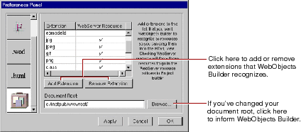
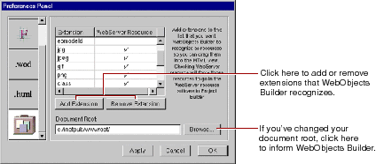
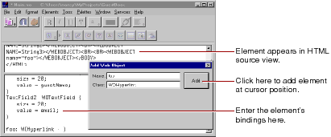

Using the Add WebObject Panel
The Add WebObject panel is an advanced feature for those who wish to work in source editing mode. It allows you to add a dynamic element and set its bindings by hand.
 Table of Contents
Table of Contents  Previous Section
Previous Section
Certain file types (such as .gif, .jpeg, .tif, .eps, and .bmp) are automatically recognized by WebObjects Builder. The Preferences Panel (which you display by choosing Tools

 Options) shows a list of file extensions that WebObjects Builder accepts. You can drag any item with one of those file extensions into a component window, and the item will be added to your project. You can add file types if you need them.
Options) shows a list of file extensions that WebObjects Builder accepts. You can drag any item with one of those file extensions into a component window, and the item will be added to your project. You can add file types if you need them. Using the Add WebObject Panel
The Add WebObject panel is an advanced feature for those who wish to work in source editing mode. It allows you to add a dynamic element and set its bindings by hand.
A panel appears that allows you to create a dynamic element by entering its class and its name. The name is used by the HTML template and declarations (.wod) file to uniquely identify the element. (Normally, you allow WebObjects Builder to generate names for you, but if you add elements in source editing mode, you must specify their names.)
The element appears in the HTML template.
Table of Contents  Next Section
Next Section